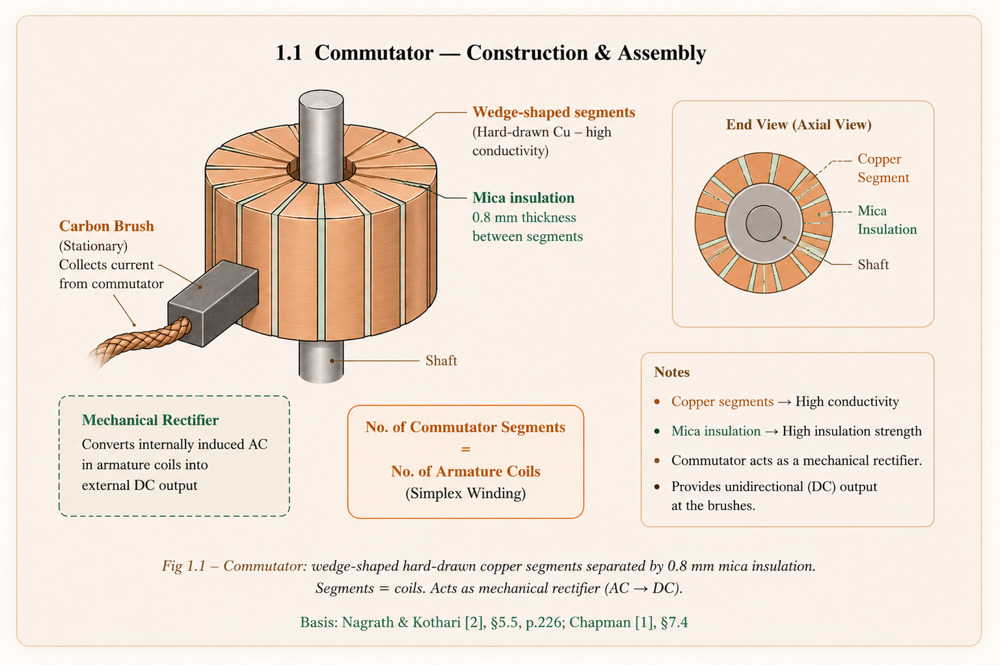
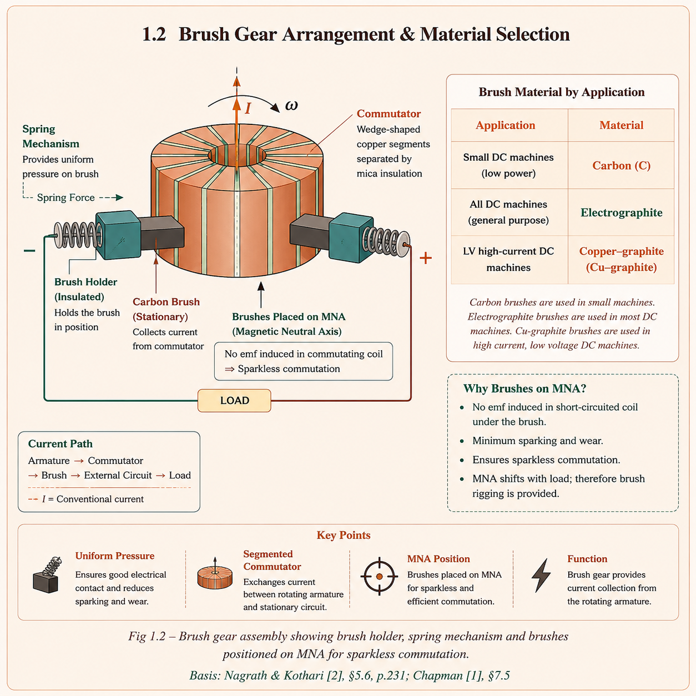
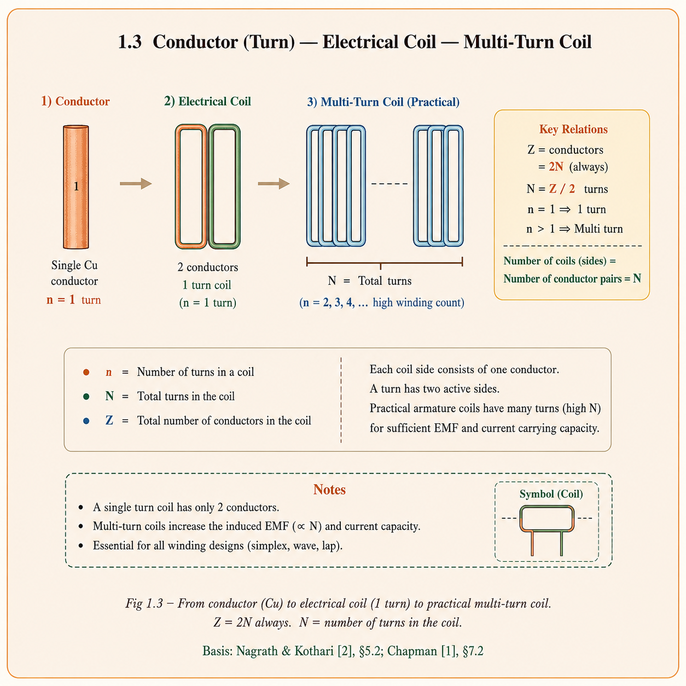
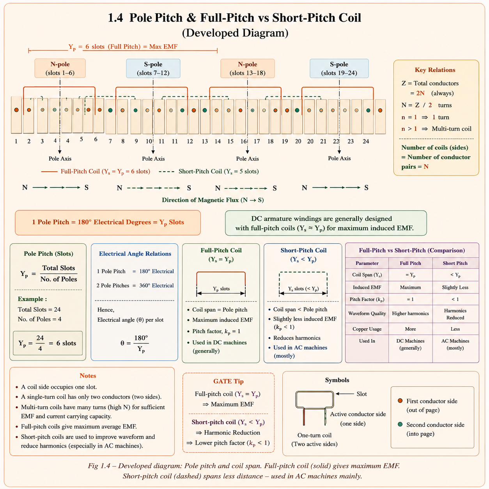
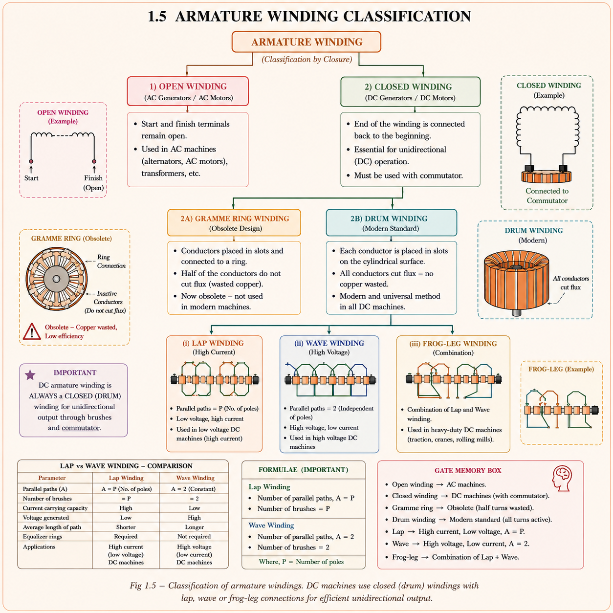
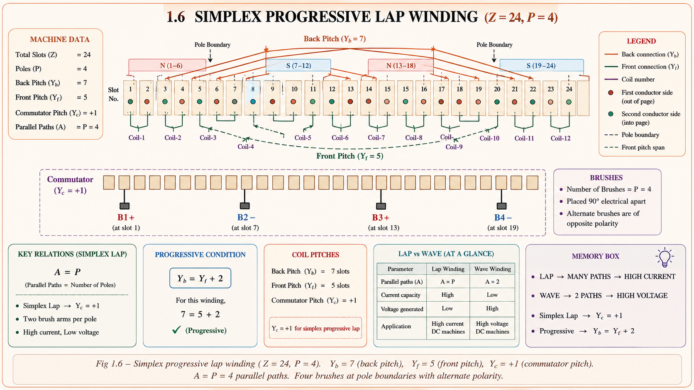
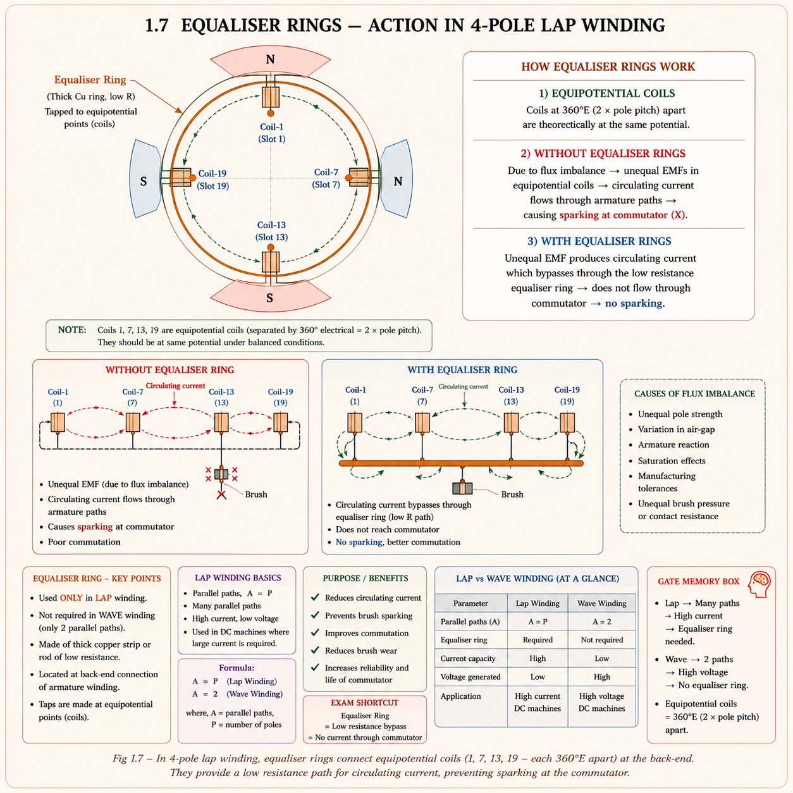
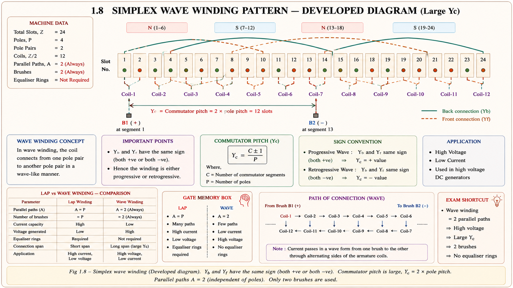

The commutator is a split-ring assembly that converts the bidirectional (AC) EMF inside armature coils into
unidirectional DC at the output terminals. It is the most critical distinguishing component of a DC machine.[1]
3.5–4% silicon is added to steel to reduce losses at the core (iron losses). Silicon reduces the conductivity
of steel without destroying its magnetic property, and provides a low hysteresis coefficient (≈1.6) to reduce
hysteresis loss. If more Si is added beyond this range, it destroys the mechanical property of steel — hence the
practical limit.

Fig 1.8 — Commutator: wedge-shaped hard-drawn copper segments separated by 0.8 mm mica
insulation. Segments = coils. Acts as mechanical rectifier (AC→DC).
Brush Gear — Construction & Commutation Conditions
Brushes offer the electrical connection between the rotating commutator and the stationary external load. They
collect current from the armature winding through brush holders and springs. Brushes are stationary
sliding contacts pressed against the spinning commutator surface.[2]

Fig 1.9 — Brush gear: carbon/graphite brushes pressed by springs onto rotating commutator.
Always placed at MNA for sparkless commutation.
If brushes collect current without any sparking → commutation is
successful. If sparks exist → commutation is not successful. Due to high
peripheral speed, any spark can spread into 2–3 adjacent segments and cause large short-circuit currents. To
ensure successful commutation, both mechanical condition (brush pressure, spring force, brush
holder alignment) and electrical condition (brush position at MNA) must be proper.[1]
🔑
Carbon Brushes — Why Preferred for Commutation Improvement
Carbon brushes have self-lubricating properties and a negative temperature
coefficient of resistance — as commutation current increases, brush resistance increases,
naturally limiting current surges. This is why carbon brushes are used generally to improve commutation
quality. Electrographite is used in all DC machines for better conductivity + commutation properties
combined.[2]
1.13
Shaft & Bearings
The purpose of the shaft is to provide mechanical output (generator: receives mechanical
power; motor: delivers mechanical power to load). The shaft is supported by bearings that offer rotation with
minimum friction.[2]
Large Machines → Roller Bearings
→Handle heavy radial loads & shaft weight
→Used in traction motors, large industrial drives
→Better for high vibration environments
Small Machines → Ball Bearings
→Lower friction, less maintenance, pre-lubricated
→Used in small fractional horsepower motors
→Sealed type for long life
1.14
Armature Winding — Terminology
Armature winding conductors may be made into turns and multi-turns to form coils, connected in series and
distributed uniformly throughout the armature periphery. Mastering the terminology is essential for all winding
design problems.[2]

Fig 1.10 — From conductor (Z) to turn to coil. Practically, multi-turn coils are used as
they provide more voltage. Z conductors → Z/2 turns. Coil span Ys separates the two coil sides.
Conductor (Z) Wire lying in magnetic field where EMF is induced.
One conductor = one active coil side in a slot.
Turn Two conductors make 1 turn; Z conductors → Z/2 turns.
Coil One or more turns wound together as a unit.
1-turn coil → 2 conductors (single coil sides).
Multi-turn coil → more turns → higher voltage (practical choice).
Coil side Each of the two active sides of a coil placed in the slots.
Coil span (Ys) Distance between 2 coil sides of same coil (in slot numbers).
Pole pitch (Yp) Peripheral distance between 2 adjacent poles in slots:
Yp = Total slots / P = S / P
1 pole pitch = 180 electrical degreesBack pitch (Yb) No. of conductors spanned by one coil at the BACK end of arm.
Front pitch (Yf) No. of conductors spanned by one coil at the FRONT (commutator) end.
Resultant pitch (Yr) Distance from start of one coil to start of next successive coil.
Yr = Yb − Yf (lap)
Commutator pitch (Yc) No. of commutator segments between 2 successive coil ends.
1.15
Coil Span, Pole Pitch & Full-Pitch Winding
For obtaining maximum induced EMF, the coil sides must be placed exactly one pole pitch apart — one under
N-pole and the other under S-pole. This is called full-pitch winding. All DC machine armature
windings are full-pitch.[2]

Fig 1.11 — Developed diagram: full-pitch coil (solid, Ys=Yp=6 for 24-slot 4-pole) gives max
EMF. Short-pitch coil (dashed) spans less — used in AC machines only.
Pole pitch (Yp) = S / P = Z / P (slots per pole)
For 24-slot, 4-pole machine: Yp = 24/4 = 6 slots
For max EMF: coil side 1 at slot 1, second side at slot 1+6 = slot 7
(1 and 8 using conductor numbering: Yb ≈ Z/P + 1 = 7)
Full-pitch winding: Ys = Yp
→ Coil sides under OPPOSITE poles → EMF adds up → maximum
→ DC machine armature is ALWAYS full-pitch only
→ Between 2 adjacent poles there is always ONE MNA
Short-pitch winding: Ys < Yp
→ Reduces harmonics, smaller end-overhang
→ Used in AC machines (induction, synchronous)
→ NOT used in DC machines (reduces EMF)
Slots/pole = 14/2 = 7 → put coil sides 8 slots apart (maintain 7-slot gap)
1.16
Classification of Armature Windings
The basic classification of armature winding is based on closure. DC generator winding must be
closed type because there is a commutator — open winding cannot produce DC from the
brushes.[2]

Fig 1.12 — Winding classification tree. Gramme ring (obsolete) replaced by drum winding —
no turns wasted. DC gen must use closed (drum) winding. Lap and wave are the two main types.
Basis: Nagrath & Kothari [2], §5.6, Fig 5.10
💡
Single-Layer vs Double-Layer Winding
Single-layer: one coil side per slot — 60 coil sides → 30 coils → 60 slots (small
machines).
Double-layer (Two-layer): two coil sides per slot (one in upper half, one in lower). Number
of slots = Number of coils. Used in all large DC machines — better winding factor, easier coil end
connection, & the standard formula: No. of slots = No. of coils applies.[2]
1.17
Lap Winding — Pitch Formulae & Design
In lap winding, successive coils overlap each other — one end of each coil connects to the previous
commutator segment, and the other to the next. The result is that the number of parallel paths equals the number
of poles. Lap winding is also called parallel winding because it has more parallel paths.[2]
Average pitch (Ya): Ya = (Yb + Yf)/2 = Z/P (average value)
Back pitch (Yb): Nearest odd integer ≥ Ya (for progressive)
Front pitch (Yf): Yf = 2·Ya − Yb (or use Yb − 2m)
LAP FORMAT RULE: Yf and Yb must have OPPOSITE signs (Yb ≠ Yf)
Both Yb and Yf must be ODD (for symmetric double-layer winding)
Therefore: Yb − Yf = ±2m\(Yc = \pm m\)
Yb > Yf → +2m → Progressive (RHS) winding
Yb < Yf → −2m → Retrogressive (LHW) winding
Resultant pitch: Yr = Yb − Yf
Parallel paths: A = P × m (simplex lap: A = P)
Ys ≅ Yp ≅ Yb ≅ Yf (all approximately equal to pole pitch for full-pitch)

Fig 1.13 — Simplex progressive lap winding (Z=24, P=4): Yb=7 (top arcs), Yf=5 (bottom
dashed arcs), Yc=1. Four brushes at pole boundaries; A = P = 4 parallel paths.
EX 1Design simplex progressive lap
winding — Z=24, P=4
Design a simplex progressive lap winding for a 4-pole machine with 24 armature conductors.
Find Yb, Yf, Yr, Yc, draw the winding table, and state the number of parallel paths.
In lap winding the number of parallel paths A = P. More parallel paths means fewer conductors in
series per path → lower voltage; but more paths carry current simultaneously →
higher current capacity. Consequently, lap winding is employed for high-current,
low-voltage DC machines (e.g., traction motors, large current generators).[2]
1.18
Equaliser Rings (Equalising Connections)
In a lap winding with multiple parallel paths, unequal pole fluxes (due to manufacturing tolerances or
asymmetric air gaps) cause unequal induced EMFs in the parallel paths. This unbalance drives a
circulating current through the brushes — causing sparking and interference with commutation.[2]

Fig 1.14 — Equaliser rings connect equipotential coils (coils 1, 7, 13, 19 — each
36\(0^\circ\)E apart) at the back-end of armature. Circulating currents bypass through rings and never reach
the commutator.
Location: Back-end of armature (opposite to commutator / front end)
Material: Thick low-resistance copper conductors
Connection: Each equipotential coil is tapped individually to its equaliser ring
Equipotential coils: Coils exactly 2× pole pitch = 36\(0^\circ\) electrical apart
→ theoretically at same EMF level at all times
Problem: Flux unbalance → unequal EMFs in parallel paths
→ circulating current → flows through brushes/commutator
→ sparking, brush wear, commutation failure
Solution: Circulating current bypassed through equaliser ring at back-end
→ does NOT enter commutator at front end → no sparking ✓
Wave winding: A = 2 always → only 2 parallel paths → auto-balanced
→ NO equaliser rings needed in wave winding
ℹ️
Why Wave Winding Needs No Equaliser Rings
Wave winding has only 2 parallel paths (simplex). Any EMF unbalance between these two
paths creates a circulating current, but with only 2 paths it automatically balances — the current in one
path opposes the current in the other. There is no net circulating current through the brushes. This is a
key maintenance advantage of wave winding over lap winding.[2]
1.19
Wave Winding — Pitch Formulae, Design & Rewinding
In wave winding, successive coils form a wave pattern — after traversing under all the poles once, the
winding returns to the starting point. The key difference from lap winding is the commutator
pitch — in wave winding it is approximately twice the pole pitch (not ±1 as in lap). This gives only
2 parallel paths regardless of the number of poles.[2]

Fig 1.15 — Wave winding: coil connects across large Yc (≈2× pole pitch). Both Yb and Yf
have the same sign (both positive or both negative), unlike lap winding.
Average pitch (Ya): Ya = (Yf + Yb)/2 = (Z ± 2) / P
Ya MUST be an integer
Key condition: Yb and Yf have the SAME sign (unlike lap where they differ)
→ \(Yb = Yf\) (ideal) OR Yb − Yf = ±2m
Commutator pitch (Yc): ≈ twice the pole pitch (key diff. from lap)
Progressive wave: Z + 2 form → \(Ya = \frac{Z+2}{P}\)
Retrogressive wave: Z − 2 form → \(Ya = \frac{Z-2}{P}\)
Parallel paths: \(A = 2m\) (simplex wave: A = 2, always —
independent of poles)
Poles vs Parallel paths (simplex comparison):
Poles Lap (A=P) Wave (A=2)
2 2 2
4 4 2
8 8 2
10 10 2
20 20 2
EX 2Wave winding — dummy coils needed
(Z=60, P=4)
Design a simplex wave winding for 60 conductors, 15 slots, 4-pole machine. Check feasibility
and determine if dummy coils are needed.
Solution
\(Ya = \frac{Z \pm 2}{P}\) = (60 ± 2) / 4
Try (Z+2): (60+2)/4 = 62/4 = 15.5 → Not integer ✗
Try (Z−2): (60−2)/4 = 58/4 = 14.5 → Not integer ✗
Neither gives integer → 60 conductors cannot work for 4-pole wave.
Find nearest feasible Z':
Try Z'=58: (58+2)/4 = 60/4 = 15 ✓ → Progressive wave, Ya=15
(\(Yb = Yf\) = 15)
Actual Z = 60, feasible Z' = 58 → 2 conductors missing
→ 2 Dummy coils are required
These dummy coils:
• Are well insulated and placed in the missing slots
• Are NOT connected to the rest of the winding
• Carry no current (purely mechanical)
• Maintain mechanical balance of the rotating armature
Wave winding → only 2 parallel paths → NO equaliser rings needed
EX 34-pole lap-to-wave rewinding — change
in V, I, P, R
A 4-pole DC generator with lap wound armature is reconnected as wave winding. What is the
change in terminal voltage, armature current, and power? Also find the resistance change.
\(I_L/I_W = A_L/A_W\); \(V_W/V_L = A_L/A_W\); \(P_L = P_W\); \(R_W/R_L = (A_L/A_W)^2\). These ratios
are universal for any lap→wave reconnection regardless of poles.
1.20
Multiplex Winding — Simplex, Duplex, Triplex
Multiplicity describes how many completely independent closed sets of winding are present in the armature.
Multiplex winding increases the current rating or loading capability of the machine. It is more
advantageous in wave winding than lap winding.[2]
Multiplex Classification & Parallel Paths
m = 1 → Simplex → 1 completely closed set of winding
m = 2 → Duplex → 2 completely closed sets connected in parallel
m = 3 → Triplex → 3 sets in parallel
m = 4 → Quadruplex → 4 sets in parallel
Parallel paths:
Multiplex Lap: A = P × m
Multiplex Wave: A = 2 × m
For a given no. of conductors, increasing multiplicity:
→ Increases current rating (more parallel paths)
→ Decreases voltage rating (fewer series conductors per path)
Multiplex winding more advantageous in WAVE than lap because:
Simplex wave: A = 2 (very few paths for multi-pole machines)
Duplex wave: A = 4 → Large gain in current capacity
(Lap already has A = P paths without multiplexing)
Simplex Lap vs Duplex Wave (4-Pole)
→Simplex lap: A = 4 | Simplex wave: A = 2
→Duplex lap: A = 8 | Duplex wave: A = 4
→Triplex lap: A = 12 | Triplex wave: A = 6
→Wave gains more from multiplexing percentage-wise
Application of Multiplex Winding
→Increases current rating for same conductors
→Decreases voltage rating simultaneously
→Used in wave winding for high current, low voltage DC machines
→\(Yc = \pm m\) (lap), Yc modified for wave
1.21
Dummy Coils
For some sets of data, Ya will not be an integer. To make it an integer, the nearest possible number of
conductors is considered. This means some conductors are missing from one of the slots. To maintain
mechanical balance (uniform mass distribution) of the rotating armature, the missing conductors
are well-insulated and placed in the missing slot as dummy (inactive) coils.[2]
Dummy Coil Properties
→Well insulated and placed in missing slot
→NOT connected to the rest of the winding
→Carry no current — purely structural
→Purpose: maintain mechanical balance only
→Make armature look complete externally
Why Not Needed in Wave (Usually)
→Wave has only 2 parallel paths
→Any imbalance automatically balanced
→Therefore no equaliser rings needed either
→But dummy coils still needed if Ya is non-integer
→(They solve mechanical problem, not electrical)
⚠️
GATE Trap — Dummy Coils in Wave Winding
Dummy coils are mechanically necessary whenever Ya is not an integer — regardless of
winding type. This is a very common GATE MCQ. They have nothing to do with equaliser rings (which are an
electrical solution for lap winding flux imbalance). A question on "purpose of dummy coils" always has the
answer: mechanical balance.
1.22
GATE & IES Previous Year Questions
GATE EE 2014Parallel paths in lap wound generator1 Mark
A 4-pole, lap wound DC generator has 48 slots with 4 conductors per slot. The number of parallel paths in
the armature winding is:
(A) 2
✓ (B) 4
(C) 6
(D) 8
✏️
Solution
For simplex lap winding: A = P = 4. Total conductors Z = 48 × 4 = 192 (not needed for
this part). Wave would give A = 2. Lap always gives A = P.
GATE EE 2017Lap-to-wave rewinding — armature current change2 Marks
A 4-pole DC generator with lap wound armature is reconnected as wave wound. All other parameters constant.
The armature current will:
(A) Double
(B) Remain the same
✓ (C) Become half
(D) Become one-fourth
✏️
Solution
\(I \propto A\). \(I_W/I_L = A_W/A_L = 2/4 = 1/2\). Current becomes half. Voltage doubles, power stays
same.
GATE EE 2020Lap winding — Yb and Yf must be odd1 Mark
In a double-layer lap winding of a DC machine, which of the following is true about back pitch Yb and front
pitch Yf?
(A) Both must be even numbers
✓ (B) Both must be odd numbers
(C) They must be equal
(D) They must equal the pole pitch
✏️
Solution
For symmetric double-layer winding both Yb and Yf must be odd numbers
— this ensures coil sides in top and bottom layers connect correctly. Also Yb ≠ Yf for lap winding
format. If both were even, the slot occupancy would be asymmetric.
IES E&T 2014Purpose of equaliser rings in lap winding1 Mark
Equaliser rings (equalising connections) are used in lap wound DC machines primarily to:
(A) Reduce total armature resistance
✓ (B) Bypass circulating currents (due to flux unbalance) through the back-end,
preventing them from passing through the brushes and commutator
(C) Increase number of parallel paths
(D) Improve field flux distribution
✏️
Solution
Unequal pole fluxes → unequal EMFs in parallel paths → circulating current. Without equaliser rings
this current flows through buses and commutator → sparking. Rings connect equipotential coils
(36\(0^\circ\)E apart) at the back-end to bypass this current before it reaches the commutator.
IES E&T 2016Wave winding — no equaliser rings needed because1 Mark
Wave wound DC machines do not require equaliser rings. The correct reason is:
(A) Wave winding has more parallel paths than lap
✓ (B) Wave winding has only 2 parallel paths; any unbalance between the two paths is
automatically self-correcting
(C) Wave winding uses only 2 brushes always
(D) Wave winding is inherently full-pitch
✏️
Solution
With only 2 paths, any circulating current in path 1 returns via path 2, automatically cancelling. No
external bypass path is needed. This is a major maintenance advantage of wave winding.
IES E&T 2018Dummy coils — purpose1 Mark
Dummy coils are used in DC armature winding to:
(A) Increase armature conductor count
✓ (B) Maintain mechanical balance when the required number of active conductors does not
occupy all slots
(C) Reduce copper loss in armature winding
(D) Improve commutation quality and reduce sparking
✏️
Solution
Dummy coils are insulated, carry no current, not connected to winding. They only maintain mechanical
balance (uniform mass distribution) of the rotating armature — preventing vibration and shaft
deflection. Their purpose is purely mechanical.
CONCEPT 1Lap vs Wave — Master
Comparison Table (GATE Favourite)
LAP WINDING:
Ya = Z/P (average pitch)
Yb + Yf = 2Z/P (sum of pitches)
Yb − Yf = ±2m (simplex: ±2)
\(Yc = \pm m\) (simplex: ±1)
\(A = Pm\) (simplex: A = P)
Progressive: Yb > Yf (+2m); Retrogressive: Yb < Yf (−2m)
Both Yb, Yf must be ODD integers
WAVE WINDING:
\(Ya = \frac{Z \pm 2}{P}\) (must be integer!)
\(Yb = Yf\) (same sign — unlike lap)
Yb − Yf = ±2m (if not exactly equal)
\(A = 2m\) (simplex: A = 2, always)
REWINDING (Lap → Wave, P-pole):
\(V_W = (P/2) \times V_L\) EMF ratio
\(I_W = (2/P) \times I_L\) Current ratio
\(P_W = P_L\) Power unchanged
\(R_W = (P/2)^2 \times R_L\) Resistance ratio
POLE PITCH:
Yp = Z/P = S/P = \(180^\circ\) electrical degrees
🤖 Ask Aarova AI — Deepen Your Understanding
Have a question on armature winding, lap/wave pitch design, or rewinding calculations? Type below or pick a
suggestion.
Lap
winding design (6P, 36Z)Progressive
vs RetrogressiveWave
winding Ya constraintResistance
after rewindingCommutation
& interpoles
Chapter Summary
Commutator
Wedge-shaped hard Cu segments, 0.8 mm mica insulation. Segments = coils. Converts bidirectional armature
EMF → unidirectional DC. Vital role in DC machine.
Brush Gear
Always at MNA. Small DC: Carbon. All DC: Electrographite. LV high-I: Cu-graphite. No sparking = successful
commutation. Spring + brush holder ensures good mechanical contact.
Lap Winding
\(A=Pm\). Yb−Yf=±2m, both odd. \(Yc=\pm m\). Progressive: Yb>Yf. High current, low voltage. Needs
equaliser rings. Also called parallel winding.
Wave Winding
\(A=2m\) always. \(Ya=(Z\pm 2)/P\) must be integer. \(Yb=Yf\) (same sign). No equaliser rings needed. May
need dummy coils. High voltage, low current. Series winding.
Equaliser Rings
Only in lap winding. Connect equipotential coils (36\(0^\circ\)E apart) at back-end. Bypass circulating
currents from flux unbalance — never reach commutator. Wave: not needed (2 paths auto-balance).
All technical content is derived from the
following standard textbooks. No content is reproduced verbatim — all explanations, examples, numerical
values, and diagrams are original to Aarova AI.
[1]Chapman, Stephen J. Electric Machinery Fundamentals, 5th
ed. McGraw-Hill, 2012. Chapter 7, §7.4–7.5: DC machine construction, commutator design, armature winding
types, lap and wave winding.